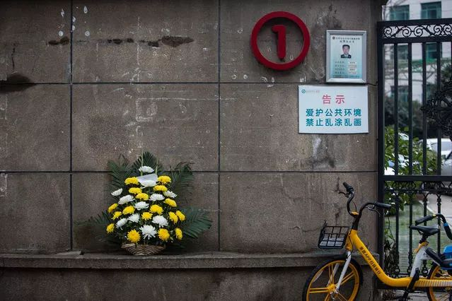
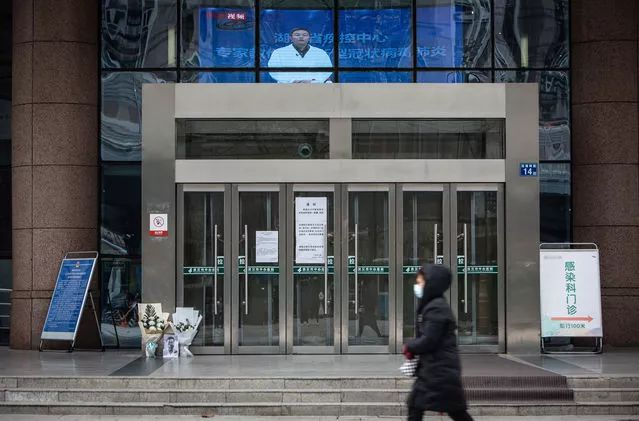
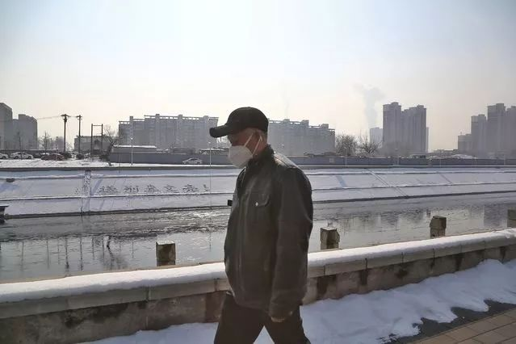

医生李文亮和他眷恋的城
原文链接 备份链接 武汉中心医院眼科医生李文亮（1986-2020）（资料图/图） 全文共*5612*字，阅读大约需要14分钟。 李文亮还活着吗？李文亮抢救过来了吗？这位武汉眼科医生的命运，在这个深夜牵动着很多人的心。直到凌 …
 2月7日上午，武汉市中心医院，市民自发献花悼念因感染新冠肺炎抢救无效逝世的医生李文亮，花束中有一张收据。这里是李文亮生前工作过的院区。2月7日凌晨3点48分，武汉中心医院官方微博宣布，该院眼科医生李文亮经全力抢救无效，于2月7日凌晨2点58分去世。中青报·中青网记者 李峥苨/摄
2月7日上午，武汉市中心医院，市民自发献花悼念因感染新冠肺炎抢救无效逝世的医生李文亮，花束中有一张收据。这里是李文亮生前工作过的院区。2月7日凌晨3点48分，武汉中心医院官方微博宣布，该院眼科医生李文亮经全力抢救无效，于2月7日凌晨2点58分去世。中青报·中青网记者 李峥苨/摄

2月7日上午，武汉市中心医院，市民自发献花悼念昨晚因感染新冠肺炎抢救无效逝世的医生李文亮。中青报·中青网记者 李峥苨/摄

2月7日上午，武汉市中心医院后湖院区，市民在门诊楼前摆放花束和照片，悼念昨晚在这里因感染新冠肺炎抢救无效逝世的医生李文亮。花束中的卡片上写着：“疫情吹哨人，你是英雄，一路走好。”中青报·中青网记者 李峥苨/摄

2月7日上午，武汉市中心医院后湖院区，市民在门诊楼前摆放花束和照片，悼念昨晚在这里因感染新冠肺炎抢救无效逝世的医生李文亮。中青报·中青网记者 李峥苨/摄

2月7日上午，武汉市中心医院后湖院区，市民在门诊楼前摆放花束和照片，悼念昨晚在这里因感染新冠肺炎抢救无效逝世的医生李文亮。中青报·中青网记者 李峥苨/摄

2月7日，北京通惠河边，积雪上写着“送别李文亮！”的文字。中青报·中青网记者 赵迪/摄

2月7日，一位市民戴着口罩从北京通惠河边走过，对岸的积雪上写着“送别李文亮！”的文字。中青报·中青网记者 赵迪/摄
编辑 | 曲俊燕
中国青年报·中青在线出品
微信编辑 | 陈轶男

觉得好看请点这里
原文链接 备份链接 武汉中心医院眼科医生李文亮（1986-2020）（资料图/图） 全文共*5612*字，阅读大约需要14分钟。 李文亮还活着吗？李文亮抢救过来了吗？这位武汉眼科医生的命运，在这个深夜牵动着很多人的心。直到凌 …
原文链接 备份链接 李文亮生前发给中青报·中青网记者杨海的照片 中青报·中青网记者 杨海 2月7日凌晨2点58分，感染新冠肺炎的武汉市中心医院眼科大夫李文亮抢救无效去世。 2月2日，他在自己的头条号上更新自己的病情，他说前一天自己的新冠 …
原文链接 备份链接 1月22日，湖北武汉，菱角湖万达广场开门营业前，商场对工作人员逐一进行体温检测。中青报·中青网记者 李峥苨/摄 1月22日，湖北武汉，菱角湖万达广场开门营业前，商场对工作人员逐一进行体温检测。中青报·中青网记者 李峥 …
原文链接 备份链接 全文共*1529*字，阅读大约需要3分钟。 训诫书犹在，“吹哨人”何以安息？人们还希望看到对李文亮等人的训诫能得到纠正，让付出了巨大代价的“吹哨人”能得到正名。 本文首发于南方周末 未经授权 不得转载 文 | …
原文链接 备份链接 他曾许过一个新年愿望，新的一岁希望能做一个简单的人，看得清世间繁杂却不在心中留下痕迹，保持足够的平常心。他还说，不经审视的人生是不值得过的，希望大家都能实现自己的价值，共勉。他的微信签名是，「理论是灰色的，生命之树常 …